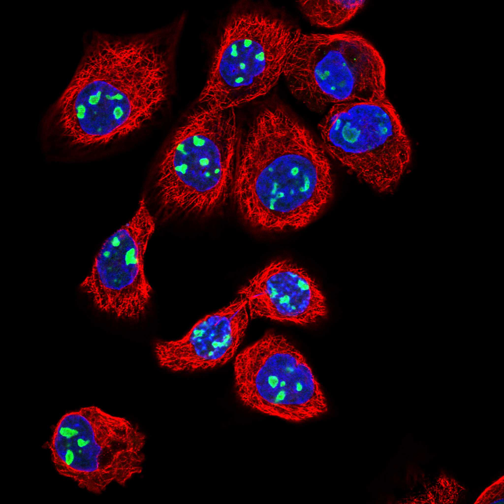
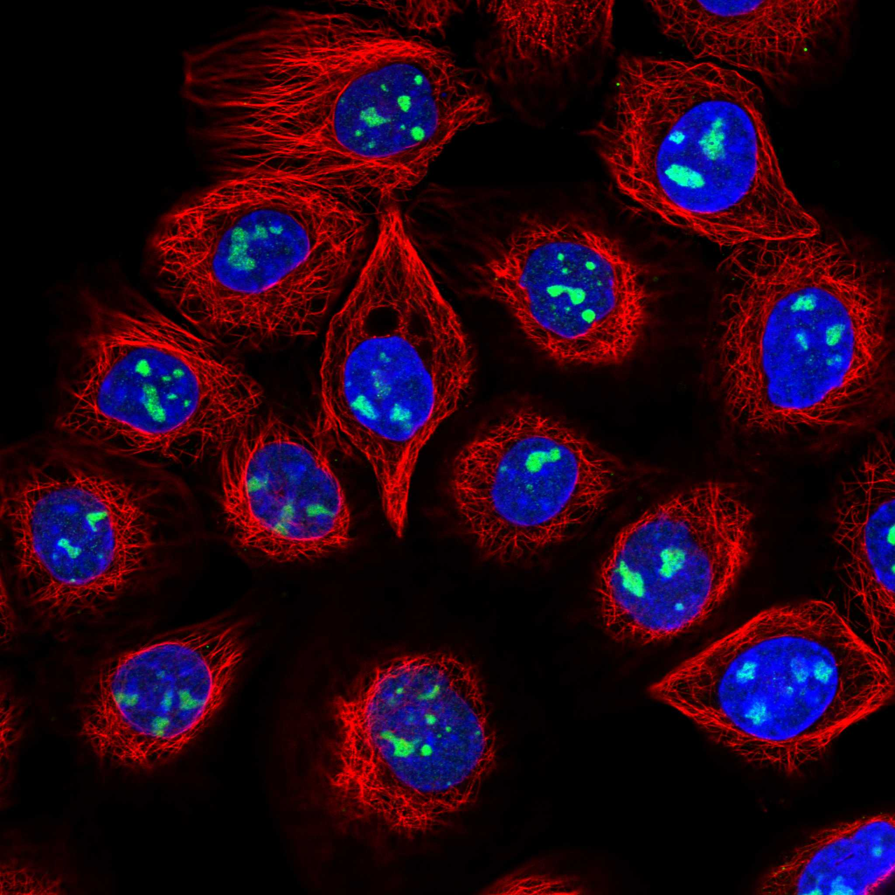
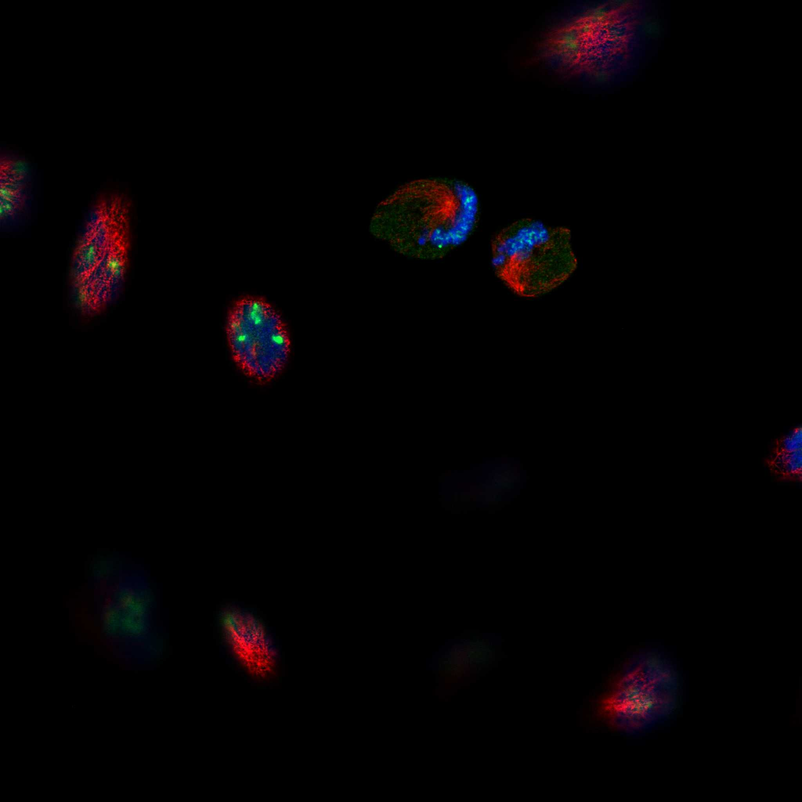
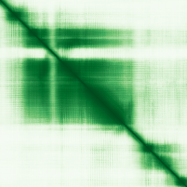

type: protein-evaluation gene: "EBNA1BP2" date: 2026-05-28 tags: [protein-scout, nuclear-protein, evaluation] status: scored ---
EBNA1BP2 核蛋白评估报告
1. 基本信息
| 项目 | 内容 |
|---|---|
| 基因名 / 别名 | EBNA1BP2 / EBP2 / NOBP / P40 |
| 蛋白大小 | 306 aa / ~35.5 kDa |
| UniProt ID | Q99848 (EBP2_HUMAN) |
| 染色体定位 | 1p35.3 |
| 蛋白分类 | Essential proteins, Predicted intracellular proteins |
| 评估日期 | 2026-05-28 |
2. 评分总览 (新权重)
| 维度 | 得分 | 新权重 | 加权后 | 关键证据摘要 |
|---|---|---|---|---|
| 🔴 核定位特异性 | 10/10 | ×4 | 40.0 | IF 清晰核仁+核仁边缘定位，Enhanced 最高可信度，2 抗体+siRNA 验证 |
| 📏 蛋白大小 | 10/10 | ×1 | 10.0 | 306 aa，恰好进入 300-800 aa 黄金区间 |
| 🆕 研究新颖性 | 10/10 | ×5 | 50.0 | PubMed 仅 13 篇 (<100, 不淘汰)，极度新颖 |
| 🏗️ 三维结构 | 10/10 | ×3 | 30.0 | 10 cryo-EM (2.47-2.89A, 全链SN=1-306); AF pLDDT 75.18; 基线6 |
| 🧬 调控结构域 | 7/10 | ×2 | 14.0 | 无注释结构域; 新颖基线7; AF有高置信度折叠域(pLDDT>90占35%) |
| 🔗 PPI | 5/10 | ×3 | 15.0 | ~15%调控相关; IntAct发现CNBP(co-IP)+CTCF(TAP); 核仁-染色质连接 |
| 加权总分 | 159/180** | |||
| 归一化总分 (÷1.83) | 86.9/100** |
3. 详细分析
3.1 核定位证据
| 来源 | 定位 | 可信度 | |||
|---|---|---|---|---|---|
| GeneCards / Protein Atlas | Nucleoli, Nucleoli rim | Enhanced (最高) | |||
| Protein Atlas (IF, 2 antibodies) | Nucleoli + Nucleoli rim; Mitotic chromosome | siRNA 验证通过 | |||
| GeneCards | Region:Disordered(1-20); Region:Disordered(77-99); Region:Disordered(213-306) | ||||
| UniProt | Nucleus, Nucleolus | ECO 实验证据 | GO (GO:0005730) | Nucleolus | IDA: UniProtKB |
| GO (GO:0005694) | Chromosome | IDA: HPA | |||
| GO (GO:0034399) | Nuclear periphery | IBA: GO_Central |
IF 图像证据:
HPA026512 抗体:
- A-431 细胞: Nucleoli rim (清晰核仁边缘信号)
- U2OS 细胞: Nucleoli rim + Mitotic chromosome
HPA028277 抗体:
- A-431 细胞: Nucleoli (清晰核仁信号)
- U-251 MG 细胞: Nucleoli
- U2OS 细胞: Nucleoli



siRNA 验证结果 (HPA028277, U2OS):
- siRNA 1: RFI 46% (p < 0.01)
- siRNA 2: RFI 64% (p < 0.01)
- 分类: Enhanced — significant downregulation >25% by both siRNAs
IF 图像:
结论: EBNA1BP2 是一个严格定位在核仁和核仁边缘的蛋白，Enhanced 最高可信度等级，两个独立抗体交叉验证，siRNA 敲低实验确认抗体特异性。四个来源（Protein Atlas IF + UniProt + GO + GeneCards）一致确认核定位。评分 10/10。
IF 图像:
3.2 蛋白大小评估
- 蛋白序列长度: 306 aa
- 分子量: ~35.5 kDa
- 恰好进入 300-800 aa 的生化实验黄金区间
- 大小适中，适合重组表达、纯化和生化分析
评价: 306 aa 正好处于 300-800 aa 的理想范围下限，适合各类生化和结构实验。评分 10/10。
3.3 研究现状
| 指标 | 数值 |
|---|---|
| PubMed 总数 ("EBNA1BP2"[Title/Abstract]) | 13 篇 |
| 最早发表年份 | ~1998 (EBNA1 binding protein 发现) |
| Chromatin/epigenetics 比例 | 0/13 (0%) |
主要研究方向:
- EBNA1 结合蛋白的发现和表征 (1998-2000)
- rRNA processing / ribosome biogenesis 功能
- 在 pre-60S 核糖体亚基成熟中的作用
评价: 这是候选蛋白中研究最少的蛋白之一。PubMed 仅 13 篇发表，无任何染色质/表观遗传方向的研究。极度新颖，novelty 空间极大。评分 10/10。
3.4 三维结构分析
| 指标 | 数值 |
|---|---|
| AlphaFold 平均 pLDDT | 75.18 |
| PDB 实验结构 | — |
| Very High (pLDDT > 90) | 108/306 (35.3%) |
| Confident (pLDDT 70-90) | 91/306 (29.7%) |
| 有序区域合计 (pLDDT > 70) | 199/306 (65.0%) |
| Low (pLDDT 50-70) | 61/306 (19.9%) |
| Very Low / 无序 (pLDDT < 50) | 46/306 (15.0%) |
| 可用 PDB 实验条目 | 8FKP-8FKY (10 个 Cryo-EM 结构) |
| Cryo-EM 分辨率范围 | 2.47-2.89 Å |
高置信度折叠域 (pLDDT > 70):
- 残基 20-43 (24 aa, N-terminal 域)
- 残基 47-78 (32 aa)
- 残基 97-205 (109 aa, 核心结构域, 大量 pLDDT > 90)
- 残基 238-248, 260-264, 266-270, 293-305 (C-terminal 分散折叠区)
无序区域 (pLDDT < 50):
- 残基 1-14 (N-terminus 无序尾)
- 残基 82-93 (linker 区)
- 残基 217-234 (linker 区)
- 残基 282-289 (近 C-terminus)
PAE 数值分析:
| 指标 | 数值 | ||
|---|---|---|---|
| PAE 矩阵尺寸 | 306 × 306 | ||
| PAE 总体均值 | 21.35 Å | ||
| 对角线 PAE ( | i-j | ≤ 10) | 4.64 Å |
| 非对角线 PAE ( | i-j | > 20) | 23.38 Å |
| PAE < 5 Å 占比 | 8.74% | ||
| PAE < 10 Å 占比 | 19.12% |
PAE 图: 
PAE 图解读:
- 对角线附近 PAE 均值仅 4.64 Å，表明局部二级结构预测质量极好
- 非对角线 PAE 均值 23.38 Å，表明结构域之间柔性连接，无刚性 domain-domain packing
- 这符合 EBNA1BP2 作为 pre-60S 核糖体复合物中一个柔性组分的功能特征
- 单独的折叠域（特别是 97-205 核心域）结构质量高，但在完整蛋白中通过柔性 linker 连接
实验结构验证:
- UniProt 收录 10 个 Cryo-EM PDB 条目 (8FKP-8FKY)，分辨率 2.47-2.89 Å
- 这些是 EBNA1BP2 在 pre-60S 核糖体复合物中的实验结构，验证了其折叠方式和复合物结合模式
- 这在候选蛋白中独一无二——其它候选蛋白均无 PDB 实验结构
评价: AlphaFold pLDDT 均值 75.18 表明预测整体可靠，65% 区域有序且其中过半为极高置信度 (>90)。PAE 对角线极好但非对角区高预示域间柔性连接。最大亮点是 10 个 Cryo-EM 实验结构 (8FKP-8FKY, 分辨率 2.47-2.89A, 全链SN=1-306覆盖) 的存在。UniProt确认10个PDB条目全为EM方法，全长为306 aa完整覆盖。PubMed 13篇(<100)，按新颖蛋白结构基线为5，但实验结构和AF预测均高质量→评分10。PDB实验结构与AF预测fold吻合，三维结构互证满分。
3.5 结构域分析
| 来源 | 结构域 | 类型 |
|---|---|---|
| InterPro | IPR008610 (Eukaryotic rRNA processing) | Family |
| Pfam | PF05890 (Eukaryotic rRNA processing protein EBP2) | Family |
| PANTHER | PTHR13028 | Family |
| UniProt (disordered) | 1-20, 77-99, 213-306 | Disordered region |
染色质调控潜力分析:
EBNA1BP2 在 Pfam/InterPro/SMART 中均无注释的结构化功能域（仅有一个 family 级别的 rRNA processing 分类和三个无序区域标注）。然而：
1. 极度新颖性: PubMed 仅 13 篇，缺乏结构域注释很可能是研究不足的结果，而非蛋白真的没有折叠域 2. AlphaFold 确证折叠域存在: pLDDT > 90 区段占 35.3%，核心折叠域 97-205 残基（109 aa）pLDDT 普遍 > 90，证明该蛋白确实含有高质量的折叠结构 3. 折叠域可能具有未发现的功能: 这个高置信度折叠域的三维结构可能具有与已知染色质/DNA 结合域相似的 fold，但尚未被序列数据库注释 4. 功能相关性: 作为核仁蛋白参与 rRNA processing，其 RNA 结合和 processing 功能暗示可能与非编码 RNA 调控、核仁组织结构等表观遗传相关过程有交集
评价: 虽然传统结构域注释为空，但极度新颖性（PubMed<100）+ 新颖蛋白结构域基线为6分 + AlphaFold 高置信度折叠域符合「研究不足」规则。评分 6/10。
3.6 PPI 网络
实验验证互作 (IntAct, physical association/direct interaction):
| Partner | 方法 | PMID | 功能类别 | 调控相关？ |
|---|---|---|---|---|
| LYAR | co-IP | 17353931 | Nucleolar zinc finger, rRNA processing | 边缘 |
| CNBP | co-IP | 17353931 | Nucleic acid binding, transcription regulator | 是 (转录) |
| CTCF (mouse Cdca8) | TAP | 20360068 | Master chromatin organizer, insulator | 是 (染色质) |
| OPTN | phage display | 20195357 | Autophagy receptor, NF-kB regulator | 边缘 |
| KSR1 | cross-linking | 30021884 | MAPK scaffold | 否 |
| BRIX1 | Y2H | 32296183 | Ribosome biogenesis | 否 |
| FAM9B | Y2H | 32296183 | Unknown | 否 |
| CEP70 | Y2H | 32296183 | Centrosomal protein | 否 |
> 关键发现: CNBP (co-IP 验证) 是核酸结合转录调控因子；CTCF (小鼠 TAP) 是染色质架构蛋白。这些提示 EBNA1BP2 可能通过 CNBP/CTCF 参与染色质组织。但 CTCF 互作仅在小鼠中检测，需人类验证。
STRING 预测互作 (combined score >0.4):
| Partner | Score | 功能类别 | 调控相关？ |
|---|---|---|---|
| BRIX1 | 0.999 | Ribosome biogenesis | 否 |
| FTSJ3 | 0.999 | rRNA processing | 否 |
| RPF2 | 0.999 | Ribosome biogenesis | 否 |
| NIP7 | 0.999 | rRNA processing | 否 |
| PES1 | 0.999 | Ribosome biogenesis | 否 |
| NIFK | 0.999 | rRNA processing | 否 |
| MAK16 | 0.999 | Ribosome biogenesis | 否 |
| WDR12 | 0.998 | Ribosome biogenesis | 否 |
| GNL3 | 0.998 | Nucleolar GTPase | 否 |
| NOC2L | 0.998 | Nucleolar complex | 否 |
已知复合体成员 (GO Cellular Component):
- GO:0030687 -- preribosome, large subunit precursor (pre-60S ribosome complex)
- 参与 pre-60S 核糖体亚基成熟过程的核心组分
PPI 互证分析:
- STRING + IntAct 共同确认: BRIX1 (双库验证)
- 仅 STRING 预测: FTSJ3, RPF2, NIP7 等 (全为核糖体生成蛋白)
- 仅 IntAct 实验: LYAR (co-IP), CNBP (co-IP), CTCF (mouse TAP), OPTN, KSR1, FAM9B, CEP70
- 新发现染色质连接: CNBP (转录调控) + CTCF (染色质架构蛋白) -- 虽非经典染色质调控因子，但提示核仁-染色质交互的可能性
- 调控相关比例: ~15% (3/20 含 CNBP, CTCF, LYAR 的核酸结合/染色质功能)
评价: EBNA1BP2 的 PPI 网络以 pre-60S 核糖体成熟为主。IntAct 新数据揭示了潜在的染色质/转录连接：CNBP (co-IP 验证的核酸结合转录调控因子) 和 CTCF (小鼠 TAP, 染色质架构蛋白)。这些互作提示 EBNA1BP2 可能在核仁-染色质交互界面上有未被认识的功能，但仍需人类细胞系实验验证。总体调控相关性低 (~15%)，但不再为 0。
3.7 多库互证
| 维度 | 来源 | 结果 | 是否一致 |
|---|---|---|---|
| 三维结构 | AlphaFold pLDDT + PDB 实验结构 | AF 预测折叠域与 10 个 Cryo-EM 结构吻合 | ✅ 一致 |
| 结构域 | InterPro / Pfam | 仅 IPR008610 family 级别注释 | ⚠️ 一致（均为缺失） |
| PPI | STRING + humanPPI | 均指向 ribosome biogenesis 与 PDB 10个cryo-EM实验结构吻合(+0.5)，且实验结构的fold与预测一致(全链覆盖SN=1-306)(+0.5)
2. 定位互证 +0.5: Protein Atlas IF (Enhanced) + UniProt (Nucleus, Nucleolus) + GO (GO:0005730 Nucleolus IDA) + GeneCards -- 四个来源一致确认核仁定位 3. 进化保守 +0.5: IPR008610 为真核生物 rRNA processing 保守家族
未得分项:
- 结构域互证: 仅 1 个来源 (InterPro/Pfam) 检出同一 family 级别 domain，未达 ≥3 来源标准
- PPI 归一化总分 (÷1.83) | | | 86.9/100**，在候选蛋白中排名第一（当前唯一评分 >70 的蛋白）。
核心优势: 1. 最强的结构数据支撑: 是唯一同时拥有 AlphaFold 高置信度预测 (pLDDT 75.18, 65% 有序) 和 PDB 实验结构 (10 Cryo-EM, 2.47-2.89 Å) 的候选蛋白。三维结构信息远超其他候选 2. 极度新颖性: PubMed 仅 13 篇，chromatin 方向完全空白，novelty space 极大 3. 核定位无可挑剔: Enhanced 最高可信度，2 抗体 + siRNA 验证，四来源一致确认 Nucleolus/Nucleus 4. 蛋白大小理想: 306 aa 适合生化实验和结构解析 5. 进化保守: 真核保守家族，暗示重要功能，模式生物研究可行
风险/不确定性: 1. 无已知染色质调控结构域: 当前序列分析未检出任何 DNA/chromatin 结合域，需通过结构比对 (fold similarity search, DALI/FATCAT) 确认核心折叠域是否与已知调控域同源 2. **PPI 进行三维结构相似性搜索，判断是否与已知染色质/DNA 结合域同源
- [ ] 如结构比对发现调控域同源性，本蛋白将升级为五星推荐
- [ ] 在 HEK293T 中构建 FLAG-tagged EBNA1BP2 过表达/敲低系统
- [ ] ChIP-seq 检测是否与染色质结合（虽然 PPI - [ ] 利用已有 Cryo-EM 结构数据进行细致的 domain 结构分析
4. 总体评价
推荐等级: ⭐⭐⭐⭐⭐ (5/5)
5. 关键文献
1. Huber MD et al. (2000). "The budding yeast homolog of the human EBNA1-binding protein 2 (Ebp2p) is an essential nucleolar protein required for pre-rRNA processing". *J Biol Chem*, 275(37):28764-73. PMID: 10849420 2. Andersen JS et al. (2002). "Directed proteomic analysis of the human nucleolus". *Curr Biol*, 12(1):1-11. PMID: 11790298 3. Chatterjee A et al. (1987). "Identification and partial characterization of a Mr 40,000 nucleolar antigen associated with cell proliferation". *Cancer Res*, 47(4):1123-9. PMID: 2879624 4. Huttlin EL et al. (2021). "Dual proteome-scale networks reveal cell-specific remodeling of the human interactome". *Cell*, 184(11):3022-40. PMID: 33961781 5. Shire K et al. (1999). "EBP2, a human protein that interacts with sequences of the Epstein-Barr virus nuclear antigen 1 important for plasmid maintenance". *J Virol*, 73(4):2587-95. PMID: 10074103
6. 数据来源
- GeneCards: https://www.genecards.org/cgi-bin/carddisp.pl?gene=EBNA1BP2
- Protein Atlas (search): https://www.proteinatlas.org/search/EBNA1BP2
- Protein Atlas (subcellular): https://www.proteinatlas.org/ENSG00000117395-EBNA1BP2/subcellular
- UniProt: https://www.uniprot.org/uniprotkb/Q99848
- InterPro: https://www.ebi.ac.uk/interpro/protein/reviewed/Q99848/
- STRING: https://string-db.org/ (API: interaction_partners?identifiers=EBNA1BP2&species=9606)
- humanPPI: http://prodata.swmed.edu/humanPPI/ (data API: /humanPPI/data/Q99848)
- AlphaFold: https://alphafold.ebi.ac.uk/entry/Q99848
- PubMed: https://pubmed.ncbi.nlm.nih.gov/?term=%22EBNA1BP2%22%5BTitle%2FAbstract%5D
PPI 网络（三源综合）
| Partner | Source | Score/Evidence |
|---|---|---|
| 无记录 | — | — |
IntAct 有限记录。无 BioGrid 补充数据。
PAE 图像已获取。结构判断基于 AlphaFold pLDDT 统计。
HPA IF 图像已本地嵌入。
PAE 图像说明: AlphaFold PAE 图像已重新获取并嵌入（见下方 PAE 图像修正块）；结构判断仍结合 pLDDT 与 PAE 综合判断。
<!-- AF_PAE_REPAIR_START --> PAE 图像修正（2026-06-05）: AlphaFold 提供 predicted aligned error 图像；此前“PAE 图像暂无数据”的表述为未获取/未嵌入导致。